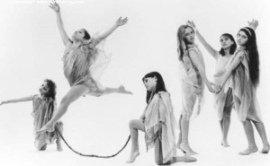
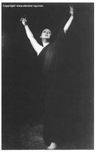
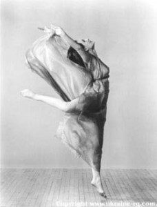
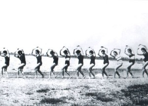
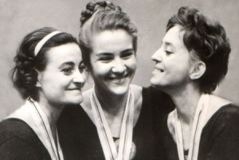

Художественная гимнастика — сравнительно молодой вид спорта. Красота женщин в Древней Греции и Риме считалась неполноценной, если она не обладала искусством грациозной походки. Научить девушек раскрепощенно и изящно двигаться, свободно владеть своим телом — эту цель и ставили перед создатели художественной гимнастики. Своим появлением она обязана мэтрам балета прославленного Мариинского театра. За небольшой срок своего существования этот вид спорта завоевал мировое признание и имеет многочисленных поклонников во всех уголках земного шара.

Значительный вклад в научное обоснование физического воспитания девушек внес французский физиолог и педагог Жорж Демени (1850 – 1917 гг.). Он доказал целесообразность применения динамических упражнений, упражнений на растягивание и расслабление мышц, танцевальных шагов, упражнений с предметами (булавами, палками, венками и др.), способствующих приобретению гибкости, ловкости, хорошей осанки, умению двигаться плавно и грациозно.
Большая заслуга в разработке теории выразительного двигательного навыка принадлежит другому, французскому педагогу Франсуа Дельсарту (1811-1871 гг.). Изучая драматическое искусство, он пришел к выводу, что каждое переживание человека сопровождается определенными движениями тела, а следовательно, путем воспроизведения движений можно создать у зрителя впечатление переживаний. Созданная Дельсартом “Грамматика художественного жеста” стала применяться в физическом воспитании, особенно при подготовке массовых гимнастических выступлений, исполняемых с музыкальным сопровождением. Идеи и принципы, разработанные Дельсартом, нашли свое воплощение в искусстве знаменитой танцовщицы Айседоры Дункан (1878-1927 гг.). Ее танцы, импровизации, построенные на движениях свободной пластики, во многом напоминают современную художественную гимнастику.


Айседора Дункан
Наряду с гимнастикой выразительных движений в конце ХIХ – начале XX в. широкое распространение получает ритмическая гимнастика, одним из создателей которой был профессор Женевской консерватории Жак Далькроз (1865 – 1914 гг.). Он разработал три группы упражнений: ритмические движения, упражнения для тренировки слуха и импровизированные действия, которые воспитывали у занимающихся музыкальность и слух. Вначале ритмическая гимнастика была средством воспитания музыкантов и артистов, позднее стала применяться в области физического воспитания.
Системы Ж. Демени, Ф. Дельсарта, Ж. Далькроза и их продолжателей оказали значительное влияние на возникновение и развитие ритмо-пластических школ “женской гимнастики” в дореволюционной России.
С первых дней существования Советского государства на предприятиях, заводах, фабриках, в учебных заведениях начали создаваться группы женской гимнастики. Их целью было укрепление здоровья, повышение работоспособности, развитие физических качеств женщин. Однако уровень занятий в этих группах был невысок. В то время особенно остро ощущался недостаток в подготовке квалифицированных кадров для работы с женскими коллективами.
В 1923 г. по распоряжению наркома просвещения А.В. Луначарского была создана “Студия пластического движения”, руководимая З.Д. Вербовой. Программа обучения в студии включала ритмическую гимнастику и сольфеджио по Ж. Далькрозу, пластику, гимнастику, акробатику, элементы хореографии, композицию вольных упражнений, анатомию, биомеханику, политграмоту. Студия готовила преподавателей физического воспитания для средних школ и техникумов.
Для подготовки специалистов высокой квалификации в Институте физической Культуры в Москве в 1934 г. была создана кафедра художественного движения и акробатики, руководимая М.Т. Окуневым. В этом же году в Ленинграде при Институте физической культуры имени П.Ф. Лесгафта создается первая всесоюзная школа художественного движения. Первыми педагогами ее стали Роза Варшавская, Елена Горлова, Анастасия Невинская, Александра Семенова-Найпак. Все эти преподаватели до прихода в ВШХГ имели свой опыт в работе по преподаванию «эстетической гимнастики» Ф. Дельсарта, «ритмической гимнастики» Ж. Далькроза, «танцевальной гимнастики» Ж. Демени и «свободного танца» Айседоры Дункан. Слияние воедино всех этих направлений гимнастики способствовало появлению этого изящного вида спорта.

«Высшая школа художественного движения» при институте физической культуре им. П.Ф. Лесгафта. Ленинград 1935 год.В высшей школе все слилось воедино и с помощью мэтров балета Мариинского театра родился красивый вид спорта — художественная гимнастика.
Первый выпуск специалистов по художественной гимнастике с высшим образованием состоялся в Ленинграде в 1938 году. Ю. Шишкарева, Т. Варакина, А. Башнина, Л. Кудряшова, Т. Маркова, С. Нечаева и др. стали через некоторое время гордостью отечественной школы.
Первые соревнования по художественной гимнастике, подготовленные силами преподавателей и студентов Института физической культуры имени П.Ф.Лесгафта, состоялись в марте 1939 года в Ленинграде. В них участвовали студентки института и представители спортивных обществ «Буревестник», «Пламя», «Каучук», «Строитель».
Выпускники школы и их учителя в апреле 1941 года провели первый чемпионат Ленинграда.
Первая разрядная классификация и нормативы по художественной гимнастике были разработаны преподавателями и выпускниками Института физической культуры Р.А. Варшавской, А. Ларионовой, Ю. Шишкаревой, Т. Варакиной, Л. Кудряшовой, Т. Марковой и др. в 1941 году. Первой победительницей официального турнира по художественной гимнастике по высшему в то время 1 разряду стала старший преподаватель Института физической культуры имени П.Ф. Лесгафта Ю. Шишкарева.
В декабре 1945 года решением Всесоюзной конференции по гимнастике в Москве художественная гимнастика, разработанная ленинградскими специалистами, была признана единой для всей страны, что было подтверждено приказом № 595 Всесоюзного комитета по делам физкультуры и спорта от 22 октября 1946 года. Первая диссертация по художественной гимнастике была защищена в Ленинграде Р. А. Варшавской на тему «Художественное движение как часть эстетического и физического воспитания» в 1946 году.
В 1947 году состоялись первые всесоюзные командные соревнования — I Всесоюзный конкурс по художественной гимнастике в Таллинне. В том же году Всесоюзным комитетом была утверждена первая типовая учебная программа для коллективов физкультуры, разработанная «генеральным штабом» ленинградских специалистов.
И лишь после войны уже в 1948 году прошел первый чемпионат Советского Союза. Первой победительницей всесоюзных соревнований по художественной гимнастике в 1948 году в Тбилиси стала выпускница Института имени П.Ф. Лесгафта Ариадна Башнина (тренер Е.Н. Горлова). Участвовали в конкурсе 130 гимнасток из 8 команд: России, Украины, Азербайджана, Латвии, Эстонии, Грузии, Москвы и Ленинграда.
Первой официальной чемпионкой СССР в декабре 1949 года в Киеве стала Любовь Денисова (тренер Ю. Шишкарева). Чемпионками СССР были также ленинградки Валентина Сивохина (тренер Ю. Шишкарева), Зинаида Третьякова (тренер А. Башнина), Дина Кабакова (тренер Т. Варакина) и Римма Постнова (тренер Е.Н. Горлова).
Первые международные матчевые встречи были проведены Ленинградом с командами Финляндии и Швеции в 1947 году, более регулярными они стали с 1955 года с командами Бельгии, Югославии, ФРГ, Франции, Чехословакии и Болгарии. В 1957 году на III Всемирном конгрессе по вопросам физического воспитания девушек и женщин в Лондоне Ю.Н. Шишкарева познакомила международную общественность с художественной гимнастикой.
Дальше развитие нового вида спорта пошло семимильными шагами.
В 1954 году появляются первые мастера спорта — «художницы». Советские мастера начинают выезжать за рубеж с показательными выступлениями демонстрируют свое мастерство в Бельгии, Болгарии, Франции, ФРГ, Чехословакии, Югославии.
В 1958 году на конгрессе Международной федерации гимнастики (ФИЖ) в Москве был продемонстрирован показательный урок и выступления лучших художественных гимнасток страны. В 1959 году президент женского технического комитета ФИЖ Берта Вилланше посетила чемпионат СССР в Москве и побывала на учебных занятиях в ряде секций. В 1961 году на Гимнастраде в Штудгарте была проведена демонстрация художественной гимнастики всем национальным федерациям. В.Г. Батаен, М.В. Лисициан, Т.Т. Варакина подготовили к этому доклад и показательные выступления сильнейших гимнасток СССР. Результатом стало решение провести первые официальные соревнования по художественной гимнастике под эгидой ФИЖ в 1963 году в Будапеште по правилам, принятым в СССР, но только по произвольной программе.
В 1960 году в Софии проводится первая официальная международная встреча: Болгария — СССР — Чехословакия. А спустя три года 7-8 декабря 1963 года в Будапеште прошел первый Чемпионат мира. Изначально соревнования назывались Кубком Европы. Однако при подведении итогов техкомом ФИЖ было обнаружено, что среди участниц были гимнастки не только из Европы, поэтому было решено считать эти соревнования I чемпионатом мира, а его победительницу — москвичку Людмилу Савинкову — первой чемпионкой мира по художественной гимнастике.

Победители I-го чемпионата мира (справа налево) Л.Савинкова, Т.Кравченко, Э.Аверкович. Будапешт 1963 год.
В 1967 году в мировой художественной гимнастике появился принципиально новый командный вид — соревнования по групповым упражнениям. Первый чемпионат мира по групповым упражнениям состоялся в 1967 году в Копенгагене.
С 1978 года проводятся чемпионаты Европы. Тогда в Мадриде первой обладательницей Европейской короны стала советская гимнастка, россиянка Галима Шугурова.
Продолжение следует...